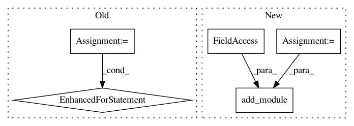

3fdd041cd7f4bd6fc877bac22b28448ae738033d,mmdet/models/backbones/resnet.py,BasicBlock,__init__,#BasicBlock#Any#Any#Any#Any#Any#Any#Any#Any#,26
Before Change
super(BasicBlock, self).__init__()
self.conv1 = conv3x3(inplanes, planes, stride, dilation)
norm_layers = []
norm_layers.append(build_norm_layer(normalize, planes))
norm_layers.append(build_norm_layer(normalize, planes))
self.norm_names = (["gn1", "gn2"] if normalize["type"] == "GN"
else ["bn1", "bn2"])
for name, layer in zip(self.norm_names, norm_layers):
self.add_module(name, layer)
self.relu = nn.ReLU(inplace=True)
self.conv2 = conv3x3(planes, planes)
self.downsample = downsample
self.stride = stride
After Change
// build_norm_layer return: (norm_name, norm_layer)
self.norm1, norm1 = build_norm_layer(normalize, planes, postfix=1)
self.norm2, norm2 = build_norm_layer(normalize, planes, postfix=2)
self.add_module(self.norm1, norm1)
self.add_module(self.norm2, norm2)
self.relu = nn.ReLU(inplace=True)
self.conv2 = conv3x3(planes, planes)
In pattern: SUPERPATTERN
Frequency: 3
Non-data size: 5
Instances
Project Name: open-mmlab/mmdetection
Commit Name: 3fdd041cd7f4bd6fc877bac22b28448ae738033d
Time: 2019-01-01
Author: thangvubk@gmail.com
File Name: mmdet/models/backbones/resnet.py
Class Name: BasicBlock
Method Name: __init__
Project Name: open-mmlab/mmdetection
Commit Name: 3fdd041cd7f4bd6fc877bac22b28448ae738033d
Time: 2019-01-01
Author: thangvubk@gmail.com
File Name: mmdet/models/backbones/resnet.py
Class Name: Bottleneck
Method Name: __init__
Project Name: reinforceio/tensorforce
Commit Name: 62cea7fcfcc9e20b784e08bddce5dc69b9578ef4
Time: 2019-01-05
Author: alexkuhnle@t-online.de
File Name: tensorforce/core/baselines/cnn_baseline.py
Class Name: CNNBaseline
Method Name: __init__